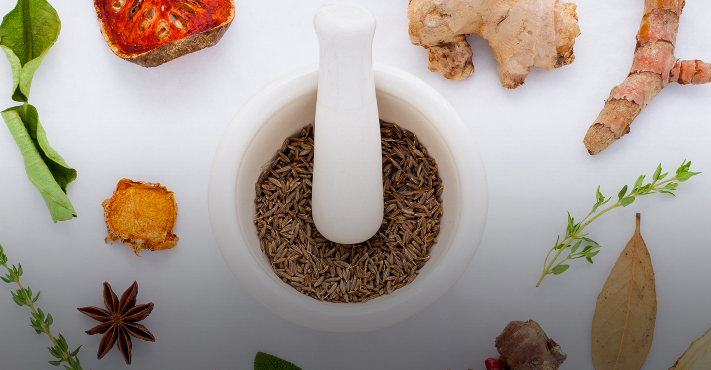
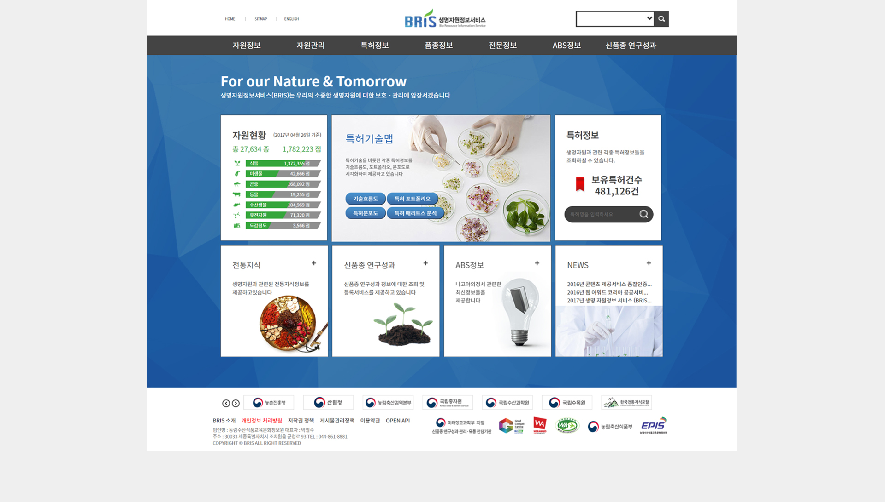

생명자원 정보서비스사이트

OVERVIEW
기존에 있던 생명자원정보 서비스를 재코딩하였다.
jquery로 박스 슬라이드, 부터 배너 슬라이드, Gnb, SubGnb 기능을 적용하였다. 기존에 있었던 노이즈 효과를 준 디자인은 버리고 패턴 배경을 디자인하여 적용하고, 기존 홈페이지의 많은 비중을 차지하는 베너를 재 디자인하였다.
생명자원정보서비스의 새로운 디자인
jquery를 이용하여 기존에 있었던
slider, bannerslider, gnb, subgnb
사이트의 기능을 재 코딩하였다
포토샵을 활용하여,
기존에 있었던 디자인과 다른 배너 디자인으로 미적 아름다움을 한층 더하였다.
